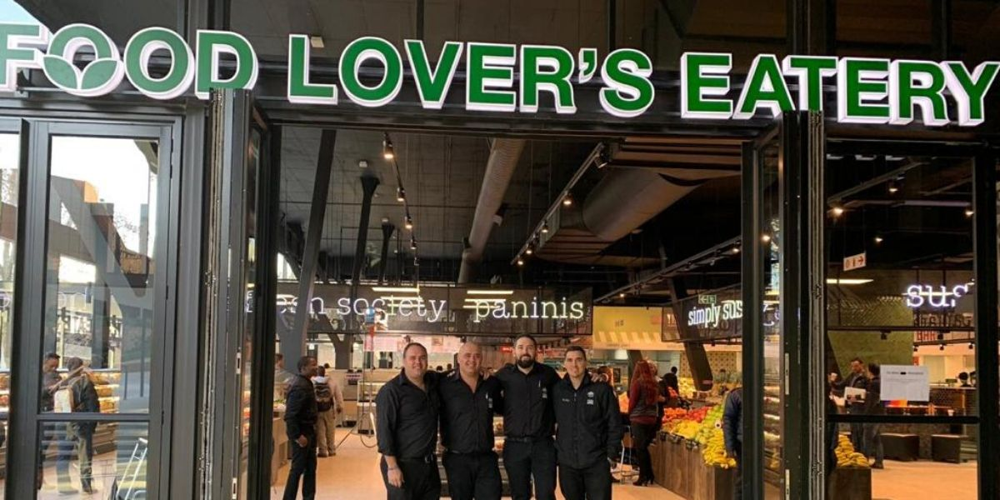

Food Lover's Market
Brief History
Food Lover's Market is a South African supermarket chain operating franchised grocery stores and convenience stores throughout Southern Africa. The company is a member of the Franchise Association of South Africa. The company was established in 1993 as a single Fruit & Veg City store in Access Park, a factory outlet complex in the Kenilworth suburb of Cape Town. The outlet was converted from an existing business - The Carrot King - into a Fruit & Veg City store. Food Lover's Market was founded by brothers Brian and Mike Coppin, whose father had a history of working in the South African retail industry, having been the Director of OK Bazaars, a retail chain that was acquired by the Shoprite Group in 1997. When it opened, the company sourced its products directly from farmers and municipal markets, and priced them aggressively, in order to grow in the market whilst competing with existing large retail chains. In 1995, the brothers were approached by someone wanting to operate a store in Port Elizabeth, and the first franchise store opened. Franchises in East London, Durban, Bloemfontein, and Pretoria followed. The company opened its first store in Johannesburg in 1999.[6]The company was established in 1993 as a single Fruit & Veg City store in Access Park, a factory outlet complex in the Kenilworth suburb of Cape Town. The outlet was converted from an existing business - The Carrot King - into a Fruit & Veg City store. Food Lover's Market was founded by brothers Brian and Mike Coppin, whose father had a history of working in the South African retail industry, having been the Director of OK Bazaars, a retail chain that was acquired by the Shoprite Group in 1997. When it opened, the company sourced its products directly from farmers and municipal markets, and priced them aggressively, in order to grow in the market whilst competing with existing large retail chains. In 1995, the brothers were approached by someone wanting to operate a store in Port Elizabeth, and the first franchise store opened. Franchises in East London, Durban, Bloemfontein, and Pretoria followed. The company opened its first store in Johannesburg in 1999.WHERE WILL YOU FIND THEM
You will find the store on the vorner of F39
Store Specials